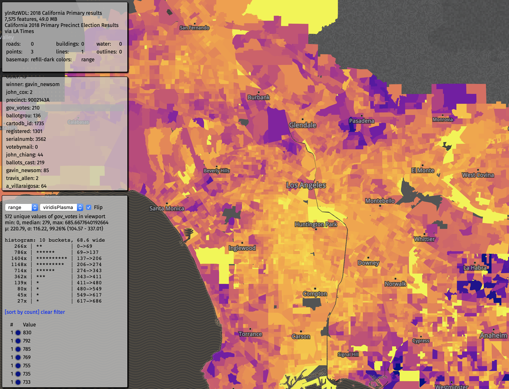
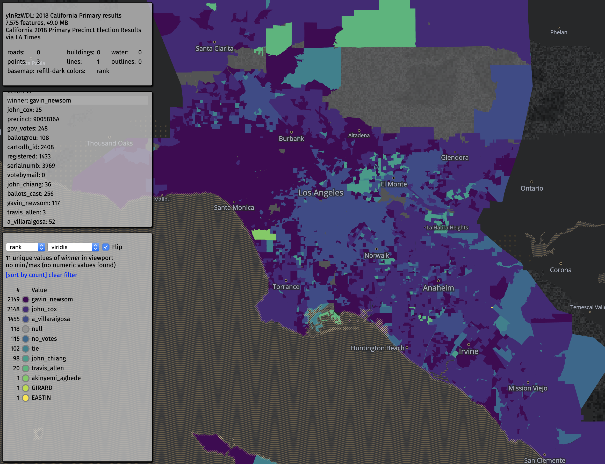
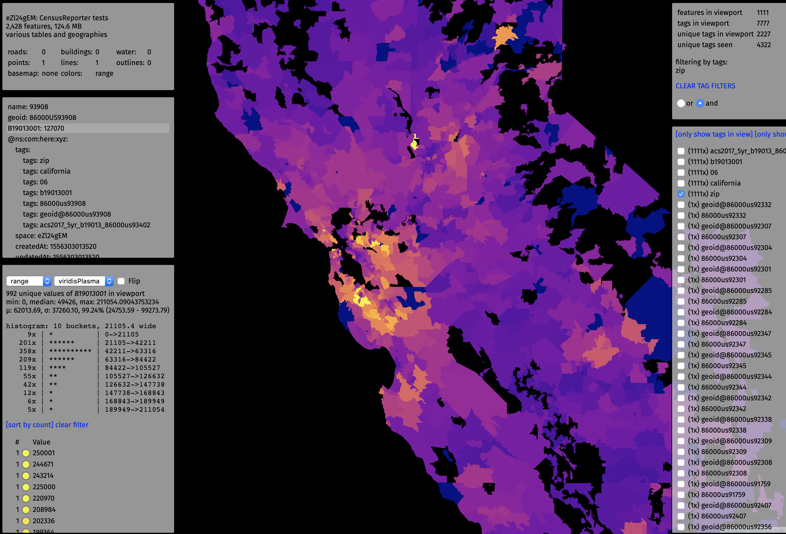
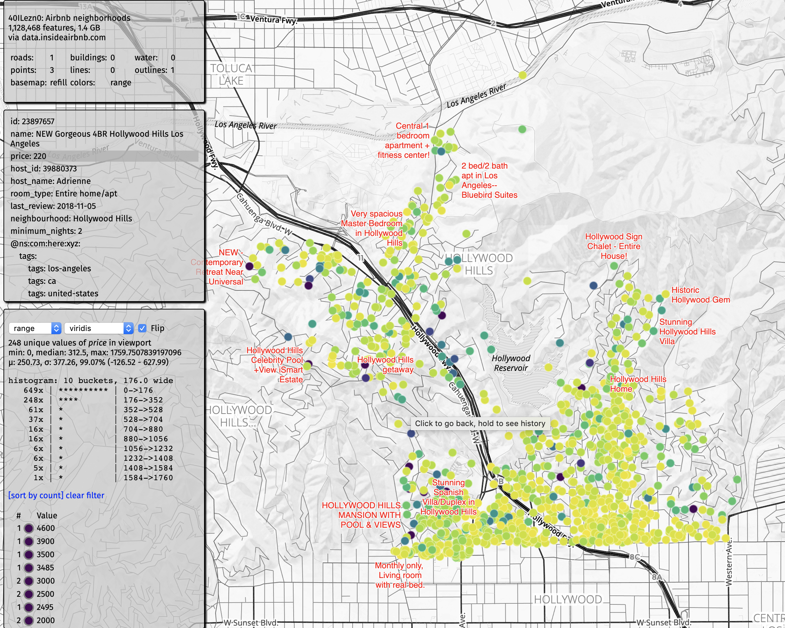

Space Invader¶
Space Invader lets you inspect and analyze data, properties, and tags in a Space.
It uses the tile query feature of the Tangram.js API to read, count and store all tags in the vector tiles loaded for map display, saving a second query to the XYZ Maps endpoint.
It can also read and analyze properties of features in the viewport, and dynamically assign color ranges based on their ranges (for numbers), or counts (of discrete values). It can calculate basic statistics on values in a space and use those to help display appropriate color ramps.
From the XYZ Maps /statistics endpoint, it reads the number of features and the size of the space along with the bounding box of the data, and attempts to center the map there (unless the map is already centered within the bbox).
Multiple color palettes can be applied to property ranges and ranks, and it is designed to be easy to add more palettes.
Multiple basemaps are available. Basemap properties such as roads and buildings can be toggled on and off. The size of points and lines can also be increased and decreased to help visualize data sets of various density.
Space Invader can show hundreds of thousands to millions of features, though this depends greatly on geographic density of data, zoom level, and kind and complexity of the geometries involved. In general you will be able to show more points and lines than polygons at any given zoom level. We're also working on ways to intelligently handle dense data sets using tags and hexbins.
To get started¶
- install the XYZ Maps CLI
- upload a GeoJSON file, CSV or Shapefile to a Space, and add tags based on properties
- open Space Invader from your account using
xyzmaps space show SPACEID -v
Here are some examples to get you familiar with the interface and what Space Invader can do:
2018 Gubernatorial California Primary results (LA Times)
The Los Angeles Times gathers, normalizes and aggregates precinct level election data from counties in Southern California. Here is data for the 2018 Gubernatorial Primary from the 7500 precincts in Los Angeles County, Orange County, and San Diego County.

There are several different visualization modes that can help get you familiar with your data and prepare it for visualization. note: these URLs are based on the latest branch -- this will change, and the root URL (for now) is xyz-space-invader.netlify.com
Simple color selection¶
X-ray mode¶
X-ray mode shows you an overview of the geometries in the space. This is especially useful when you have overlapping geometries, or different types of geometries, or you just want to see the coverage of the data set.
Note¶
You can toggle polygon outlines on and off (either press 'o' or click on 'outlines' in the top left panel).
Hash mode¶
This generates unique colors based on a hash of all a feature's properties. This is useful for distinguishing adjacent or nearby features. Note however that this does not prevent similar colors from being adjacent to each other.
Coloring features by property value¶
There are several ways to generate colors by the value of an individual property. Once the mode is selected, click on a property in the center left pane to analyze it.
Property¶
This generates a simple color hash of the values of the selected property.
Color choices are consistent for any specific property value, but this does not prevent similar colors from being adjacent to each other.
Range¶
This is ideal for properties with continuous numerical values (temperature, price, area, vote count, etc). It will apply a color palette from the minimum to maximum values of the property seen in the viewport.
You can choose between several different color palettes, and you can also "flip" each palette, depending on if you want to emphasize the lower or higher values with 'brighter' values.
Individual values of properties in the viewport can be sorted either by count or by value. (Note that this can be a very long list, depending on the kind or size of the data.)
Note that the color of an individual feature may change as you pan or zoom the map as different min and max values become visible in the viewport. This allows better inspection of otherwise subtle differences between "local" values, especially when "global" min and max is extreme compared to local values. (However, we recognize that being able to compare local values to global min and max values is also necessary. This will come in a later release.)
Rank¶
This mode sorts values by their frequency in the viewport. This is best for a relatively a discrete number of values, usually text.

Statistics¶
Basic statistics are generated for the values of the selected property, including, min, max, median, mean, standard deviation, and sigma.
A dynamically generated histogram is generated in order show how the data is distributed in the viewport.
A quick note on outliers: In many datasets, a few outliers can cause a max so high that the majority of features around the median and mean get 'squished' into the opposite end of the color palette. You can see the high and the low, but one outlying high value may force thousands of values to be in one 'low' colors. For the time being, we limit the 'filtered' max to be four sigmas above the mean. This in effect 'squishes' the outliers into the high end of the color range, while the majority of the values get more room in the color palette. More fine-grained controls for manipulating the min and max values to handle various value ranges are in the works.
The benefit of this approach can be seen in this dataset of AirBnB listings:

Most properties in the Los Angeles area are under $250 a night, but a few listings are as high as $10,000 or even $25,000. By considering a 'filtered max' closer to the median and mean, a meaningful spread of colors can be shown, as opposed to just two for very high and very low.
More interesting views of AirBnB listings data include:
- single rooms vs whole houses (rank or property)
- prices (range)
- names (rank)
US Census data by income (California and San Francisco)

Filter by tags to show data by
- county
- zip code
- census tract (SF only)
The income of certain counties and zip codes is so far above the average that it triggers the 4-sigma filter.
Tags (WIP)¶
Excavation Permits in San Francisco, by rank:

AirBnB listings in the Hollywood Hills:

Feedback¶
If you have suggestions or run into bugs, please file a Github issue.